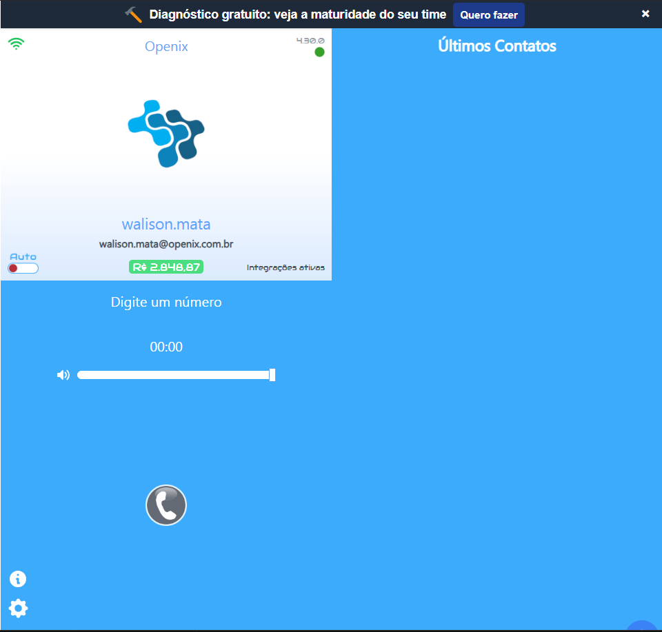
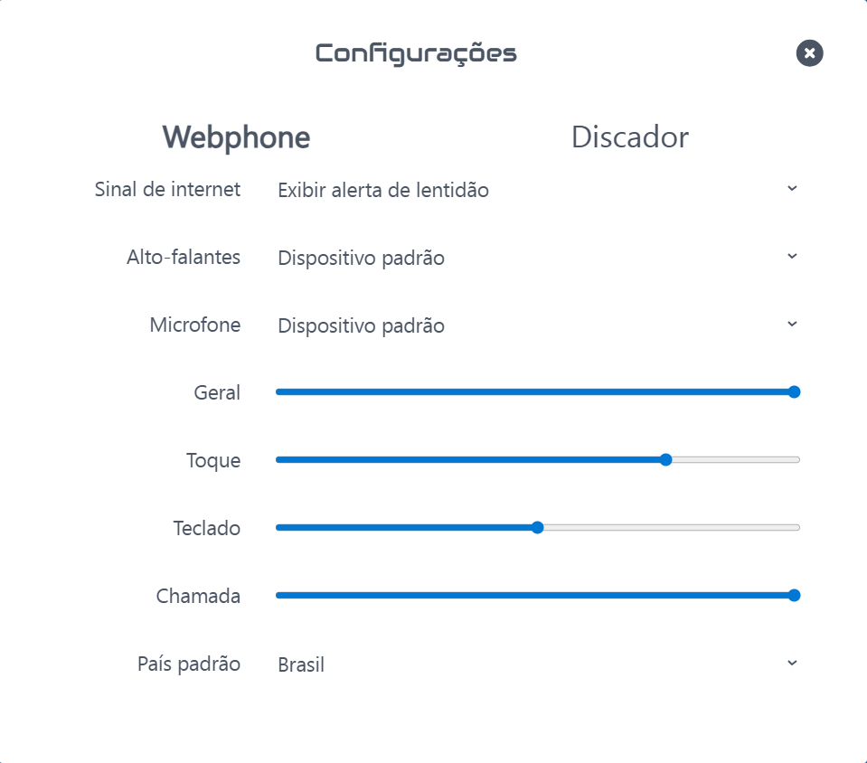
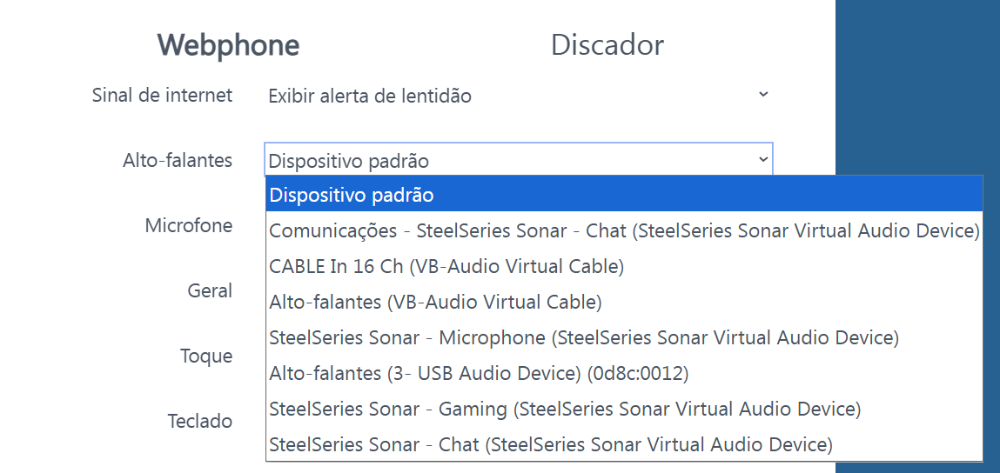
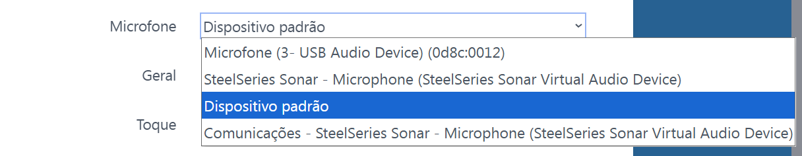
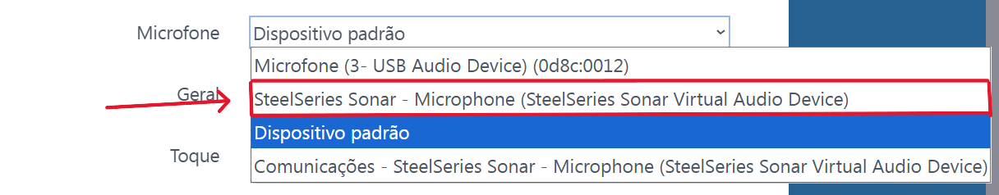
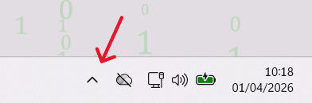
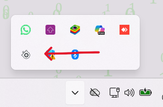
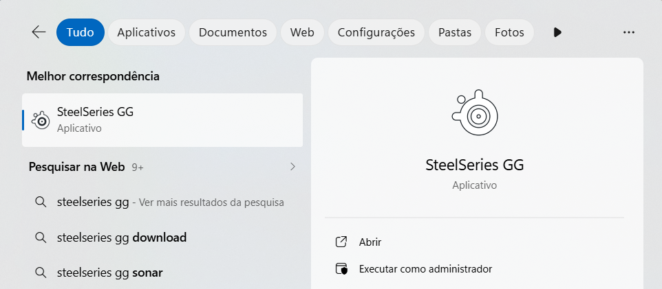

Áudio e microfone não funcionam no Api4com ou há muito ruído externo
Se o seu áudio funciona em outras plataformas e deixa de funcionar somente no Api4com, siga as configurações abaixo para corrigir o problema.

Na página inicial, no canto inferior esquerdo, haverá uma engrenagem de configuração. Clique nela para ser redirecionado para a página abaixo:

Ao acessar a tela de configurações, você verá duas opções: uma para alto-falantes e outra para microfone.

Configuração de alto-falantes

Configuração de microfone
Por padrão, mantenha em Dispositivo padrão. Porém, se o áudio ou o microfone não estiver funcionando, ou se houver muito vazamento de som externo, aplique a configuração abaixo.
Como na imagem abaixo, se existir a opção SteelSeries - Gaming, selecione essa opção.
Faça o mesmo processo para o microfone.

Se a opção SteelSeries não existir, siga estas etapas: no canto inferior direito da barra de tarefas do seu computador, clique na seta apontada para cima.

Ao clicar, você verá este ícone:

Caso ele não apareça, pesquise por SteelSeries na barra de pesquisa do Windows e abra o programa.

Pressione Enter e, em seguida, feche a janela do SteelSeries.
Se o problema persistir, entre em contato com o TI.